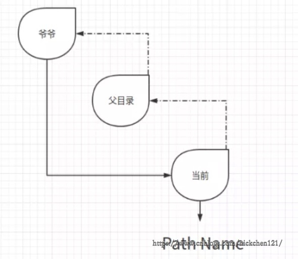
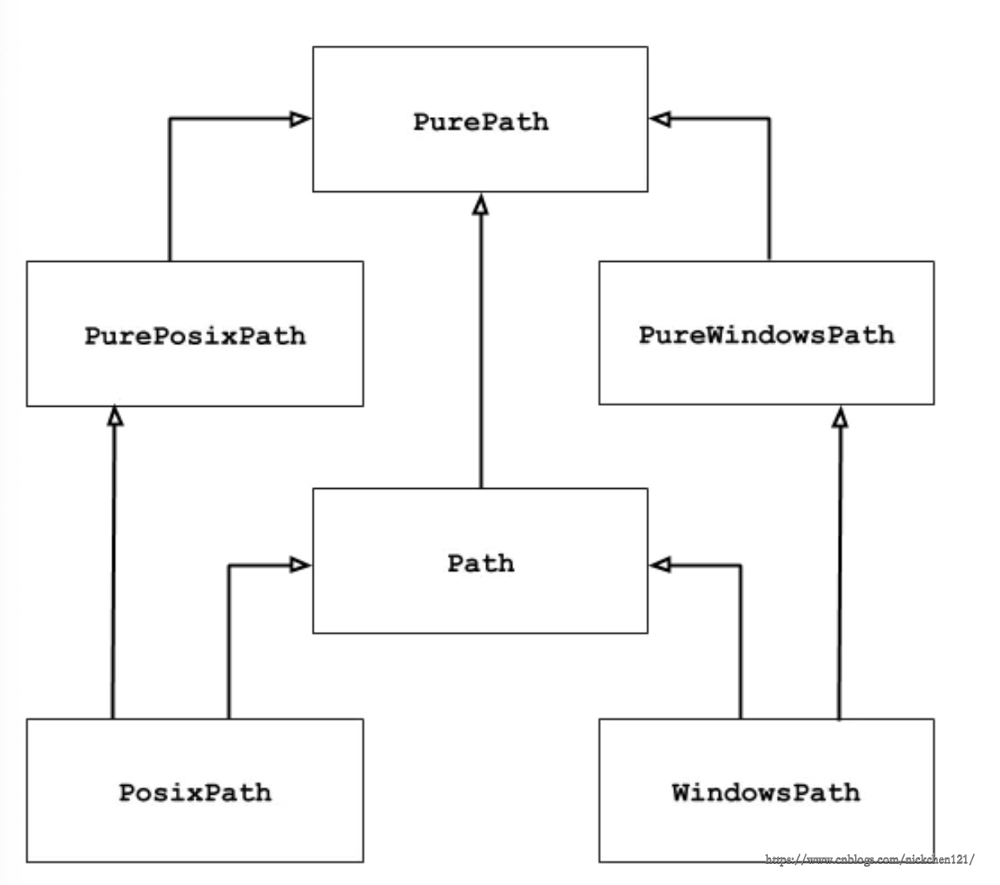
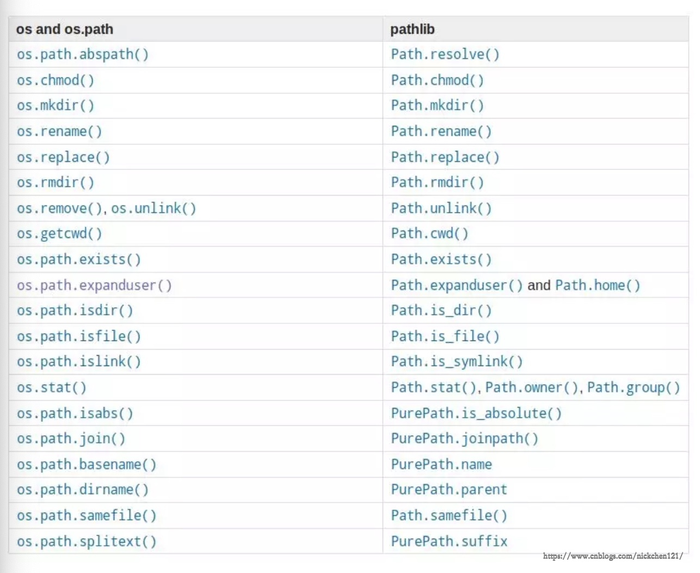
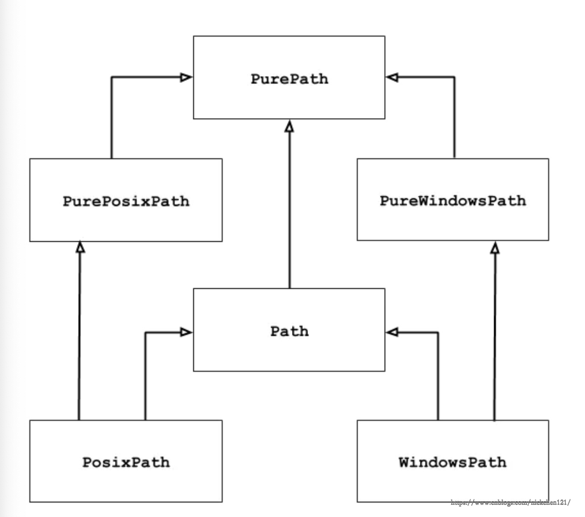

pathlib 是Python内置库，Python 文档给它的定义是 Object-oriented filesystem paths（面向对象的文件系统路径）。pathlib 提供表示文件系统路径的类，其语义适用于不同的操作系统。路径类在纯路径之间划分，纯路径提供纯粹的计算操作而没有 I / O，以及具体路径，它继承纯路径但也提供 I / O 操作。
对于这繁琐而又冗余的话，听起来一定让人不习惯。那就对了，因为这是使用谷歌翻译直译过来的，说到这我怎么感觉我要回去偷偷补个英语，但是注意了，接下来大白话的语述并不影响你去了解并使用他。
相对于 os 模块的 path 方法，Python3 标准库 pathlib 模块的 Path 对路径的操作会更简单。
使用 os 模块时，通过 getcwd() 方法可以直接获取当前文件路径（在 Pycharm 中，可以使用 os.path.dirname(__file__) 获取当前文件路径，因为 Python 并没有提供 __file__ 这个概念，他是 Pycharm 提供的）：
# python语言实现
# /Users/mac/test.py
import os
print(os.getcwd()) # '/Users/mac'在 pathlib 模块中，通过 Path.cwd() 方法可以直接获取当前文件路径，我们可以动手试一试：
# python语言实现
# /Users/mac/test.py
import pathlib
print(pathlib.Path.cwd()) # PosixPath('/Users/mac')通过 Pycharm 我们可以使用快捷键 ctrl+鼠标左键 点击查看该方法的详细介绍，如下图所示：
从上图中可以看出 cwd() 方法不过是对 os 库中 getcwd() 方法进行了封装，看起来好像更差劲了，但是官方的推出一定不是子虚乌有的，现在让我们一起来揭秘。
上面那个案例仿佛让 pashlib 库的使用变得更加复杂了，为了揭秘，我们只能一同感受下 pathlib 库的构成，了解 pathlib 库如何带给我们便捷。

在 os 模块中，如果我们要获取某一个文件的父目录，os 模块的写法为：
# python语言实现
# /Users/mac/test.py
import os
print(os.path.dirname(os.path.dirname(os.getcwd()))) # /Users在 pathlib 库中，可以通过这样简洁方法实现：
# python语言实现
# /Users/mac/test.py
import pathlib
print(pathlib.Path.cwd().parent) # /Users这段代码看起来是不是更符合 Pythonic ？像写英语一样。不对，这个时候的我不应该在补英语吗？/偷笑
并且，如果你需要找他爷爷，是不是再来一个 .parent 就行了。相比较 os 模块的 os.path.dirname() 是不是方便太多太多了？
如果你要在他父目录中拼接路径，通过 os 模块你可能需要写这么一长串代码：
# python语言实现
# /Users/mac/test.py
import os
print(os.path.join(os.path.dirname(os.getcwd()), '路径拼接', '真麻烦')) # /Users/路径拼接/真麻烦当你使用 pathlib 的时候，我们一起来感受他的便捷之处吧！
# python语言实现
# /Users/mac/test.py
import os
paths = ('路径拼接', '真麻烦')
print(pathlib.Path.cwd().parent.joinpath(*paths)) # /Users/路径拼接/真麻烦通过 pathlib 库拼接路径，你可以很方便的调节他在他祖辈的位置，妙哉。
pathlib 封装了很多的 os.path 中的方法，如下所示：
# python语言实现
os.path.expanduser() --> pathlib.Path.home()
os.path.expanduser() --> pathlib.Path.expanduser()
os.stat() --> pathlib.Path.stat()
os.chmod() --> pathlib.Path.chmod()上一节的操作大部分都是通过 pathlib 库中的 Path 实现，其实他还有一个更加高大上的模块，也就是我们这一节的主角：pathlib.PurePath。
PurePath 是一个纯路径对象，纯路径对象提供了实际上不访问文件系统的路径处理操作。有三种方法可以访问这些类，我们也称之为 flavor 。
上面这段话来自于官方文档，感觉听不懂也没关系，下面我们将举几个栗子来剖析他。
下面让我们来实现一个神奇的功能，判断下当前的路径是否有符合'*.py'规则的文件。
# python语言实现
# /Users/mac/test.py
import pathlib
print(pathlib.PurePath(__file__).match('*.py')) # True输出为什么会是 True 呢？因为当前文件夹下不就有一个 test.py 吗？
看见 pathlib.PurePath 后面跟着 match，那是不是能说明他是个对象，而不是一个单纯的路径字符串，因此我们可以试着打印 pathlib.PurePath 看一看。
# python语言实现
# /Users/mac/test.py
import pathlib
os_path = os.path.dirname(__file__)
print(os_path) # /Users/mac/
pure_path = pathlib.PurePath(__file__)
print(pure_path) # /Users/mac/test.py <class 'pathlib.PurePosixPath'>
print(pathlib.PurePath(__file__).match('*.py')) # True通过打印 os.path 获取当前路径的结果，得到一个路径字符串；而通过 pathlib.PurePath 则获得了一个 PurePosixPath 对象，并且由此得到的路径包括了当前文件 test.py。
那么问题来了，PurePosixPath究竟是什么玩意呢？能不能像机器猫的记忆面包一样帮助我速成英语。下面不得不又一次展示我们这个官方文档了：
pathlib 可以操作两种文件系统的路径，一种是 Windows 文件系统，另一种称为非 Windows 文件系统，对应的对象是 pathlib.PurePosixPath 和 pathlib.PureWindowsPath，不过不用担心，这些类并非是指定在某些操作系统上运行才能够使用，无论你运行的是哪个系统，都可以实例化所有这些类，因为它们不提供任何进行系统调用的操作。
这讲的都是啥呀？不提供任何进行系统调用的操作，纳尼？？？/脑补黑人脸
为了彻底的了解他，不得不放出真正的大招了，也就是我们官方文档在最开始的时候提供的这一段描述和一张图：
Pure paths are useful in some special cases; for example:
If you want to manipulate Windows paths on a Unix machine (or vice versa). You cannot instantiate a WindowsPath when running on Unix, but you can instantiate PureWindowsPath.
You want to make sure that your code only manipulates paths without actually accessing the OS. In this case, instantiating one of the pure classes may be useful since those simply don’t have any OS-accessing operations.
翻译：纯路径在某些特殊情况下很有用；例如：如果要在Unix计算机上操作Windows路径（反之亦然）。WindowsPath在Unix上运行时无法实例化，但可以实例化PureWindowsPath。
您希望确保您的代码仅操作路径而不实际访问操作系统。在这种情况下，实例化其中一个纯类可能很有用，因为那些只是没有任何操作系统访问操作。

这张图看起来如此简洁，但是他的复杂程度不亚于清明上河图呀！也许朝着这张图片洒点水（请勿轻易尝试，珍惜你的女朋友——电脑）才能得知真相吧？但真相其实就藏在接下来的描述当中。
少侠，上几节中老夫已经将毕生所学教给你了，未来只能靠你自己去参考这份武林秘籍——九阴真经，他详尽的描述了 os 模块和 pathlib 库的对应关系，如果忘了，别忘了多回家看看。

# python语言实现
Path.iterdir() # 遍历目录的子目录或者文件
Path.is_dir() # 判断是否是目录
Path.glob() # 过滤目录(返回生成器)
Path.resolve() # 返回绝对路径
Path.exists() # 判断路径是否存在
Path.open() # 打开文件(支持with)
Path.unlink() # 删除文件或目录(目录非空触发异常)# python语言实现
Path.parts # 分割路径 类似os.path.split(), 不过返回元组
Path.drive # 返回驱动器名称
Path.root # 返回路径的根目录
Path.anchor # 自动判断返回drive或root
Path.parents # 返回所有上级目录的列表# python语言实现
Path.with_name() # 更改路径名称, 更改最后一级路径名
Path.with_suffix() # 更改路径后缀# python语言实现
Path.joinpath() # 拼接路径
Path.relative_to() # 计算相对路径# python语言实现
Path.match() # 测试路径是否符合pattern
Path.is_dir() # 是否是文件
Path.is_absolute() # 是否是绝对路径
Path.is_reserved() # 是否是预留路径
Path.exists() # 判断路径是否真实存在# python语言实现
Path.cwd() # 返回当前目录的路径对象
Path.home() # 返回当前用户的home路径对象
Path.stat() # 返回路径信息, 同os.stat()
Path.chmod() # 更改路径权限, 类似os.chmod()
Path.expanduser() # 展开~返回完整路径对象
Path.mkdir() # 创建目录
Path.rename() # 重命名路径
Path.rglob() # 递归遍历所有子目录的文件通过上面的几个例子，我们对 pathlib 应该有一个大体的了解，接下来再回顾一下官方给 pathlib 库的定义：
This module offers classes representing filesystem paths with semantics appropriate for different operating systems. Path classes are divided between pure paths, which provide purely computational operations without I/O, and concrete paths, which inherit from pure paths but also provide I/O operations.
释义：pathlib 提供表示文件系统路径的类，其语义适用于不同的操作系统。路径类在纯路径之间划分，纯路径提供纯粹的计算操作而没有I / O，以及具体路径，它继承纯路径但也提供I / O操作。
回顾上一章清明上河图：

如果你以前从未使用过这个模块，或者只是不确定哪个类适合您的任务，那么 Path 很可能就是您所需要的。他会为代码运行的不同的系统实例化属于该系统的具体路径，而不需要你自己设定。
pathlib 不是单纯的对 os 中的一些方法进行封装，而是为了兼容不同的操作系统而生。他为每类操作系统定义了接口，也就是说你希望在UNIX系统上操作Windows系统的路径，直接操作是不可能的，所以他为你创建了一套接口 PurePath，你可以通过接口来实现你的目的（反之亦然）。